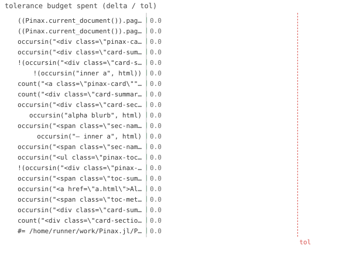

21/21 passed · 0.25s
| id | label | got | want | Δ vs tol (kind) | |
|---|---|---|---|---|---|
| ✓ | t452 | ((Pinax.current_document()).pages[1]).summary == "what this page does" @ test_index.jl:22 code | 1.0 | 1.0 | 0.0 vs 0.5 (abs) |
| ✓ | t453 | ((Pinax.current_document()).pages[1]).summary === nothing @ test_index.jl:32 code | 1.0 | 1.0 | 0.0 vs 0.5 (abs) |
| ✓ | t454 | occursin("<div class=\"pinax-cards\">", html) @ test_index.jl:48 code | 1.0 | 1.0 | 0.0 vs 0.5 (abs) |
| ✓ | t455 | occursin("<div class=\"card-summary\">alpha blurb</div>", html) @ test_index.jl:49 code | 1.0 | 1.0 | 0.0 vs 0.5 (abs) |
| ✓ | t456 | !(occursin("<div class=\"card-sections\">", html)) @ test_index.jl:50 code | 1.0 | 1.0 | 0.0 vs 0.5 (abs) |
| ✓ | t457 | !(occursin("inner a", html)) @ test_index.jl:51 code | 1.0 | 1.0 | 0.0 vs 0.5 (abs) |
| ✓ | t458 | count("<a class=\"pinax-card\"", html) == 2 @ test_index.jl:52 code | 1.0 | 1.0 | 0.0 vs 0.5 (abs) |
| ✓ | t459 | count("<div class=\"card-summary\">", html) == 1 @ test_index.jl:53 code | 1.0 | 1.0 | 0.0 vs 0.5 (abs) |
| ✓ | t460 | occursin("<div class=\"card-sections\">", html) @ test_index.jl:72 code | 1.0 | 1.0 | 0.0 vs 0.5 (abs) |
| ✓ | t461 | occursin("alpha blurb", html) @ test_index.jl:73 code | 1.0 | 1.0 | 0.0 vs 0.5 (abs) |
| ✓ | t462 | occursin("<span class=\"sec-name\">Sec A</span>", html) @ test_index.jl:74 code | 1.0 | 1.0 | 0.0 vs 0.5 (abs) |
| ✓ | t463 | occursin("— inner a", html) @ test_index.jl:75 code | 1.0 | 1.0 | 0.0 vs 0.5 (abs) |
| ✓ | t464 | occursin("<span class=\"sec-name\">Sec T</span>", html) @ test_index.jl:76 code | 1.0 | 1.0 | 0.0 vs 0.5 (abs) |
| ✓ | t465 | occursin("<ul class=\"pinax-toc\">", html) @ test_index.jl:92 code | 1.0 | 1.0 | 0.0 vs 0.5 (abs) |
| ✓ | t466 | !(occursin("<div class=\"pinax-cards\">", html)) @ test_index.jl:93 code | 1.0 | 1.0 | 0.0 vs 0.5 (abs) |
| ✓ | t467 | occursin("<span class=\"toc-summary\">— alpha blurb</span>", html) @ test_index.jl:94 code | 1.0 | 1.0 | 0.0 vs 0.5 (abs) |
| ✓ | t468 | occursin("<a href=\"a.html\">Alpha</a>", html) @ test_index.jl:95 code | 1.0 | 1.0 | 0.0 vs 0.5 (abs) |
| ✓ | t469 | occursin("<span class=\"toc-meta\">(1 section · 1 figure)</span>", html) @ test_index.jl:96 code | 1.0 | 1.0 | 0.0 vs 0.5 (abs) |
| ✓ | t470 | occursin("<div class=\"card-summary\">no sections yet</div>", html) @ test_index.jl:108 code | 1.0 | 1.0 | 0.0 vs 0.5 (abs) |
| ✓ | t471 | count("<div class=\"card-sections\">", html) == 1 @ test_index.jl:109 code | 1.0 | 1.0 | 0.0 vs 0.5 (abs) |
| ✓ | t472 | #= /home/runner/work/Pinax.jl/Pinax.jl/test/test_index.jl:113 =# @pinaxsetup index = :bogus @ test_index.jl:113 code | 1.0 | 1.0 | 0.0 vs 0.5 (abs) |

⤓ downloadPinax.reset!()
@test Pinax.current_document().pages[1].summary == "what this page does"Pinax.reset!()
@test Pinax.current_document().pages[1].summary === nothingPinax.reset!()
html = read(Pinax.render(; out=sitedir("cards")), String)
@test occursin("<div class=\"pinax-cards\">", html)@test occursin("<div class=\"card-summary\">alpha blurb</div>", html)@test !occursin("<div class=\"card-sections\">", html) # breakdown is :rich-only@test !occursin("inner a", html) # section summary is :rich-only@test count("<a class=\"pinax-card\"", html) == 2 # both pages get a card@test count("<div class=\"card-summary\">", html) == 1 # only Alpha's summary shownhtml = read(Pinax.render(; out=sitedir("rich")), String)
@test occursin("<div class=\"card-sections\">", html)@test occursin("alpha blurb", html) # page summary still shown@test occursin("<span class=\"sec-name\">Sec A</span>", html) # section name@test occursin("— inner a", html) # section summary@test occursin("<span class=\"sec-name\">Sec T</span>", html) # summary-less section listedhtml = read(Pinax.render(; out=sitedir("toc")), String)
@test occursin("<ul class=\"pinax-toc\">", html)@test !occursin("<div class=\"pinax-cards\">", html) # cards replaced by the list@test occursin("<span class=\"toc-summary\">— alpha blurb</span>", html)@test occursin("<a href=\"a.html\">Alpha</a>", html)@test occursin("<span class=\"toc-meta\">(1 section · 1 figure)</span>", html)html = read(Pinax.render(; out=sitedir("rich_empty")), String)
@test occursin("<div class=\"card-summary\">no sections yet</div>", html) # card still shown@test count("<div class=\"card-sections\">", html) == 1 # only Alpha's@test_throws ErrorException @pinaxsetup index = :bogus{kind=link}